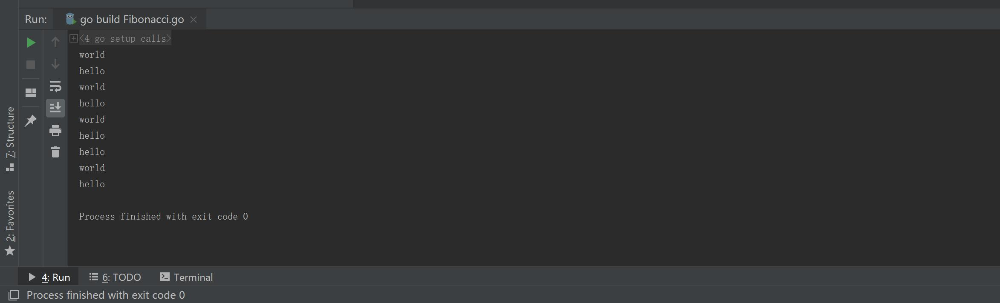
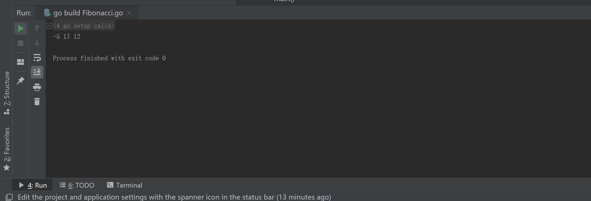
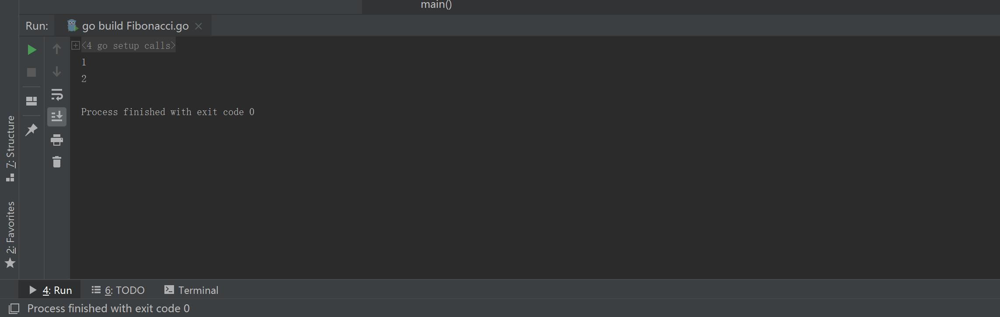
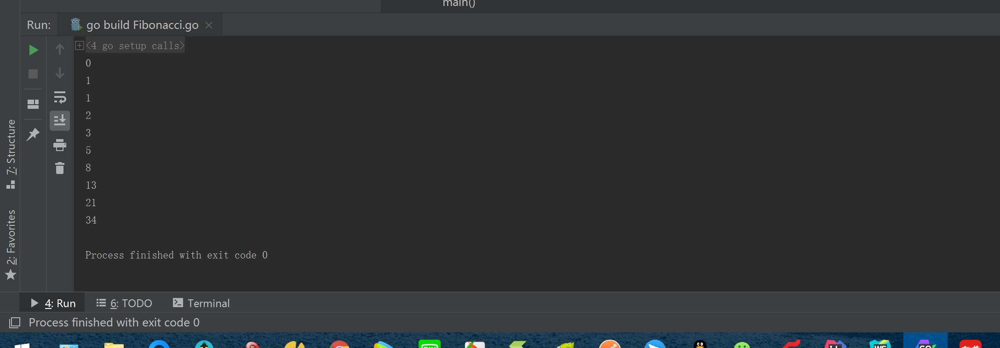
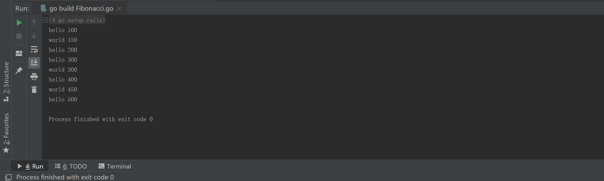
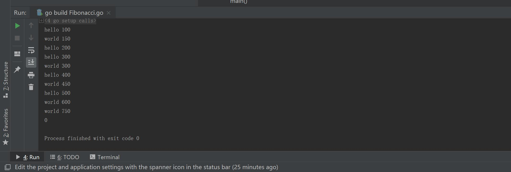
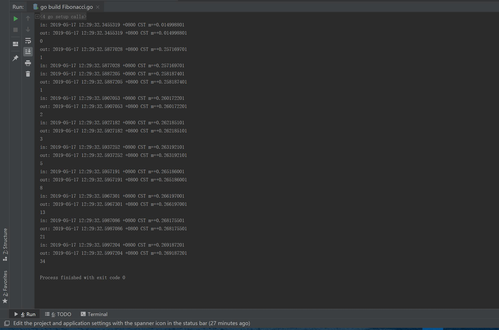

<!DOCTYPE html>
<html>
<head><meta name="generator" content="Hexo 3.8.0">
  <meta charset="utf-8">
  <meta name="baidu-site-verification" content="L6Lm9d5Crl">
  
  
  
  
  <title>Go语言并发 | Jason Blog 主页</title>
  <meta name="viewport" content="width=device-width, initial-scale=1, maximum-scale=1">
  <meta name="description" content="Go语言并发Go 语言支持并发，我们只需要通过 go 关键字来开启 goroutine 即可。 goroutine 是轻量级线程，goroutine 的调度是由 Golang 运行时进行管理的。 goroutine 语法格式： 1go 函数名( 参数列表 ) 例如： 1go f(x, y, z) 开启一个新的 goroutine: 1f(x, y, z) Go 允许使用 go 语句开启一个新的运行">
<meta property="og:type" content="article">
<meta property="og:title" content="Go语言并发">
<meta property="og:url" content="http://yoursite.com/2019/05/17/Go语言并发/index.html">
<meta property="og:site_name" content="Jason Blog 主页">
<meta property="og:description" content="Go语言并发Go 语言支持并发，我们只需要通过 go 关键字来开启 goroutine 即可。 goroutine 是轻量级线程，goroutine 的调度是由 Golang 运行时进行管理的。 goroutine 语法格式： 1go 函数名( 参数列表 ) 例如： 1go f(x, y, z) 开启一个新的 goroutine: 1f(x, y, z) Go 允许使用 go 语句开启一个新的运行">
<meta property="og:locale" content="zh-CN">
<meta property="og:image" content="http://yoursite.com/2019/05/17/Go语言并发/20190517121104.jpg">
<meta property="og:image" content="http://yoursite.com/2019/05/17/Go语言并发/20190517121555.jpg">
<meta property="og:image" content="http://yoursite.com/2019/05/17/Go语言并发/20190517121925.jpg">
<meta property="og:image" content="http://yoursite.com/2019/05/17/Go语言并发/20190517122316.jpg">
<meta property="og:image" content="http://yoursite.com/2019/05/17/Go语言并发/20190517122508.jpg">
<meta property="og:image" content="http://yoursite.com/2019/05/17/Go语言并发/20190517122817.jpg">
<meta property="og:image" content="http://yoursite.com/2019/05/17/Go语言并发/20190517123108.jpg">
<meta property="og:updated_time" content="2019-06-06T06:43:21.189Z">
<meta name="twitter:card" content="summary">
<meta name="twitter:title" content="Go语言并发">
<meta name="twitter:description" content="Go语言并发Go 语言支持并发，我们只需要通过 go 关键字来开启 goroutine 即可。 goroutine 是轻量级线程，goroutine 的调度是由 Golang 运行时进行管理的。 goroutine 语法格式： 1go 函数名( 参数列表 ) 例如： 1go f(x, y, z) 开启一个新的 goroutine: 1f(x, y, z) Go 允许使用 go 语句开启一个新的运行">
<meta name="twitter:image" content="http://yoursite.com/2019/05/17/Go语言并发/20190517121104.jpg">
  
    <link rel="alternative" href="/atom.xml" title="Jason Blog 主页" type="application/atom+xml">
  
  
    <link rel="icon" href="/img/favicon.png">
  
  
  <link rel="stylesheet" href="//cdn.bootcss.com/animate.css/3.5.0/animate.min.css">
  
  <link rel="stylesheet" href="/css/style.css">
  <link rel="stylesheet" href="/font-awesome/css/font-awesome.min.css">
  <link rel="apple-touch-icon" href="/apple-touch-icon.png">
  
  
      <link rel="stylesheet" href="/fancybox/jquery.fancybox.css">
  
  <!-- 加载特效 -->
    <script src="/js/pace.js"></script>
    <link href="/css/pace/pace-theme-flash.css" rel="stylesheet">
  <script>
      var yiliaConfig = {
          fancybox: true,
          animate: true,
          isHome: false,
          isPost: true,
          isArchive: false,
          isTag: false,
          isCategory: false,
          open_in_new: false
      }
  </script>
</head></html>
<body>
  <div id="container">
    <div class="left-col">
    <div class="overlay"></div>
<div class="intrude-less">
    <header id="header" class="inner">
        
<script src="https://7.url.cn/edu/jslib/comb/require-2.1.6,jquery-1.9.1.min.js"></script>

        <a href="/" class="profilepic">
            
            
            
        </a>
        <hgroup>
          <h1 class="header-author"><a href="/">Jason</a></h1>
        </hgroup>
        
        
            <form>
                <input type="text" class="st-default-search-input search" id="local-search-input" placeholder="搜索一下" autocomplete="off">
            </form>
            <div id="local-search-result"></div>
        
        
            <script type="text/javascript">
                (function() {
                    'use strict';
                    function getMatchData(keyword, data) {
                        var matchData = [];
                        for(var i =0;i<data.length;i++){
                            if(data[i].title.toLowerCase().indexOf(keyword)>=0) 
                                matchData.push(data[i])
                        }
                        return matchData;
                    }
                    var $input = $('#local-search-input');
                    var $resultContent = $('#local-search-result');
                    $input.keyup(function(){
                        $.ajax({
                            url: '/search.json',
                            dataType: "json",
                            success: function( json ) {
                                var str='<ul class=\"search-result-list\">';                
                                var keyword = $input.val().trim().toLowerCase();
                                $resultContent.innerHTML = "";
                                if ($input.val().trim().length <= 0) {
                                    $resultContent.empty();
                                    $('#switch-area').show();
                                    return;
                                }
                                var results = getMatchData(keyword, json);
                                if(results.length === 0){
                                    $resultContent.empty();
                                    $('#switch-area').show();
                                    return;
                                } 
                                for(var i =0; i<results.length; i++){
                                    str += "<li><a href='"+ results[i].url +"' class='search-result-title'>"+ results[i].title +"</a></li>";
                                }
                                str += "</ul>";
                                $resultContent.empty();
                                $resultContent.append(str);
                                $('#switch-area').hide();
                            }
                        });
                    });
                })();
            </script>
        
        
            <div id="switch-btn" class="switch-btn">
                <div class="icon">
                    <div class="icon-ctn">
                        <div class="icon-wrap icon-house" data-idx="0">
                            <div class="birdhouse"></div>
                            <div class="birdhouse_holes"></div>
                        </div>
                        <div class="icon-wrap icon-ribbon hide" data-idx="1">
                            <div class="ribbon"></div>
                        </div>
                        
                        <div class="icon-wrap icon-link hide" data-idx="2">
                            <div class="loopback_l"></div>
                            <div class="loopback_r"></div>
                        </div>
                        
                        
                        <div class="icon-wrap icon-me hide" data-idx="3">
                            <div class="user"></div>
                            <div class="shoulder"></div>
                        </div>
                        
                    </div>
                </div>
                <div class="tips-box hide">
                    <div class="tips-arrow"></div>
                    <ul class="tips-inner">
                        <li>菜单</li>
                        <li>标签</li>
                        
                        <li>友情链接</li>
                        
                        
                        <li>关于我</li>
                        
                    </ul>
                </div>
            </div>
        
        <div id="switch-area" class="switch-area">
            <div class="switch-wrap">
                <section class="switch-part switch-part1">
                    <nav class="header-menu">
                        <ul>
                        
                            <li><a href="/archives/">所有文章</a></li>
                        
                            <li><a href="/categories/开发工具/">玩转开发工具</a></li>
                        
                            <li><a href="/categories/digital">玩转数码</a></li>
                        
                            <li><a href="/categories/algorithm">算法学习</a></li>
                        
                            <li><a href="/about/">关于我</a></li>
                        
                        </ul>
                    </nav>
                    <nav class="header-nav">
                        <ul class="social">
                            
                                <a class="fl github" target="_blank" href="https://github.com/JasonWang0911/" title="github">github</a>
                            
                                <a class="fl rss" target="_blank" href="/atom.xml" title="rss">rss</a>
                            
                        </ul>
                    </nav>
                </section>
                
                <section class="switch-part switch-part2">
                    <div class="widget tagcloud" id="js-tagcloud">
                        
                    </div>
                </section>
                
                
                <section class="switch-part switch-part3">
                    <div id="js-friends">
                    
                      <a target="_blank" class="main-nav-link switch-friends-link" href="http://blog.csdn.net/baidu_21483933">csdn</a>
                    
                      <a target="_blank" class="main-nav-link switch-friends-link" href="https://segmentfault.com/blog/maocg_web">segmentfault</a>
                    
                      <a target="_blank" class="main-nav-link switch-friends-link" href="http://www.jianshu.com/users/eb37ef89c746/latest_articles">简书</a>
                    
                    </div>
                </section>
                
                
                
                <section class="switch-part switch-part4">
                
                    <div id="js-aboutme">爱动漫,爱游戏,爱编程,爱运动,爱的太多了!</div>
                </section>
                
            </div>
        </div>
    </header>
</div>

    </div>
    <div class="mid-col">
      <nav id="mobile-nav">
      <div class="overlay">
          <div class="slider-trigger"></div>
          <h1 class="header-author js-mobile-header hide"><a href="/" title="回到主页">Jason</a></h1>
      </div>
    <div class="intrude-less">
        <header id="header" class="inner">
            <a href="/" class="profilepic">
                
                    
                
            </a>
            <hgroup>
              <h1 class="header-author"><a href="/" title="回到主页">Jason</a></h1>
            </hgroup>
            
            <nav class="header-menu">
                <ul>
                
                    <li><a href="/archives/">所有文章</a></li>
                
                    <li><a href="/categories/开发工具/">玩转开发工具</a></li>
                
                    <li><a href="/categories/digital">玩转数码</a></li>
                
                    <li><a href="/categories/algorithm">算法学习</a></li>
                
                    <li><a href="/about/">关于我</a></li>
                
                <div class="clearfix"></div>
                </ul>
            </nav>
            <nav class="header-nav">
                <div class="social">
                    
                        <a class="github" target="_blank" href="https://github.com/JasonWang0911/" title="github">github</a>
                    
                        <a class="rss" target="_blank" href="/atom.xml" title="rss">rss</a>
                    
                </div>
            </nav>
        </header>
    </div>
</nav>
      <div class="body-wrap"><article id="post-Go语言并发" class="article article-type-post" itemscope itemprop="blogPost">
  
    <div class="article-meta">
      <a href="/2019/05/17/Go语言并发/" class="article-date">
      <time datetime="2019-05-17T04:04:41.000Z" itemprop="datePublished">2019-05-17</time>
</a>

    </div>
  
  <div class="article-inner">
    
      <input type="hidden" class="isFancy">
    
    
      <header class="article-header">
        
  
    <h1 class="article-title" itemprop="name">
      Go语言并发
    </h1>
  


      </header>
      
      <div class="article-info article-info-post">
        

        
        <div class="clearfix"></div>
      </div>
      
    
    <div class="article-entry" itemprop="articleBody">
      
          
        <h1 id="Go语言并发"><a href="#Go语言并发" class="headerlink" title="Go语言并发"></a>Go语言并发</h1><p>Go 语言支持并发，我们只需要通过 go 关键字来开启 goroutine 即可。</p>
<p>goroutine 是轻量级线程，goroutine 的调度是由 Golang 运行时进行管理的。</p>
<p>goroutine 语法格式：</p>
<figure class="highlight go"><table><tr><td class="gutter"><pre><span class="line">1</span><br></pre></td><td class="code"><pre><span class="line"><span class="keyword">go</span> 函数名( 参数列表 )</span><br></pre></td></tr></table></figure>
<p>例如：</p>
<figure class="highlight go"><table><tr><td class="gutter"><pre><span class="line">1</span><br></pre></td><td class="code"><pre><span class="line"><span class="keyword">go</span> f(x, y, z)</span><br></pre></td></tr></table></figure>
<p>开启一个新的 goroutine:</p>
<figure class="highlight go"><table><tr><td class="gutter"><pre><span class="line">1</span><br></pre></td><td class="code"><pre><span class="line">f(x, y, z)</span><br></pre></td></tr></table></figure>
<p>Go 允许使用 go 语句开启一个新的运行期线程， 即 goroutine，以一个不同的、新创建的 goroutine 来执行一个函数。 同一个程序中的所有 goroutine 共享同一个地址空间。</p>
<p>实例:</p>
<figure class="highlight go"><table><tr><td class="gutter"><pre><span class="line">1</span><br><span class="line">2</span><br><span class="line">3</span><br><span class="line">4</span><br><span class="line">5</span><br><span class="line">6</span><br><span class="line">7</span><br><span class="line">8</span><br><span class="line">9</span><br><span class="line">10</span><br><span class="line">11</span><br><span class="line">12</span><br><span class="line">13</span><br><span class="line">14</span><br><span class="line">15</span><br><span class="line">16</span><br><span class="line">17</span><br><span class="line">18</span><br></pre></td><td class="code"><pre><span class="line"><span class="keyword">package</span> main</span><br><span class="line"></span><br><span class="line"><span class="keyword">import</span> (</span><br><span class="line">        <span class="string">"fmt"</span></span><br><span class="line">        <span class="string">"time"</span></span><br><span class="line">)</span><br><span class="line"></span><br><span class="line"><span class="function"><span class="keyword">func</span> <span class="title">say</span><span class="params">(s <span class="keyword">string</span>)</span></span> &#123;</span><br><span class="line">        <span class="keyword">for</span> i := <span class="number">0</span>; i &lt; <span class="number">5</span>; i++ &#123;</span><br><span class="line">                time.Sleep(<span class="number">100</span> * time.Millisecond)</span><br><span class="line">                fmt.Println(s)</span><br><span class="line">        &#125;</span><br><span class="line">&#125;</span><br><span class="line"></span><br><span class="line"><span class="function"><span class="keyword">func</span> <span class="title">main</span><span class="params">()</span></span> &#123;</span><br><span class="line">        <span class="keyword">go</span> say(<span class="string">"world"</span>)</span><br><span class="line">        say(<span class="string">"hello"</span>)</span><br><span class="line">&#125;</span><br></pre></td></tr></table></figure>
<p>执行以上代码，你会看到输出的 hello 和 world 是没有固定先后顺序。因为它们是两个 goroutine 在执行的结果：<br></p>
<h1 id="通道（channel）"><a href="#通道（channel）" class="headerlink" title="通道（channel）"></a>通道（channel）</h1><p>通道（channel）是用来传递数据的一个数据结构。</p>
<p>通道可用于两个 goroutine 之间通过传递一个指定类型的值来同步运行和通讯。操作符 &lt;- 用于指定通道的方向，发送或接收。如果未指定方向，则为双向通道。</p>
<figure class="highlight go"><table><tr><td class="gutter"><pre><span class="line">1</span><br><span class="line">2</span><br><span class="line">3</span><br></pre></td><td class="code"><pre><span class="line">ch &lt;- v    <span class="comment">// 把 v 发送到通道 ch</span></span><br><span class="line">v := &lt;-ch  <span class="comment">// 从 ch 接收数据</span></span><br><span class="line">           <span class="comment">// 并把值赋给 v</span></span><br></pre></td></tr></table></figure>
<p>声明一个通道很简单，我们使用chan关键字即可，通道在使用前必须先创建：</p>
<figure class="highlight go"><table><tr><td class="gutter"><pre><span class="line">1</span><br></pre></td><td class="code"><pre><span class="line">ch := <span class="built_in">make</span>(<span class="keyword">chan</span> <span class="keyword">int</span>)</span><br></pre></td></tr></table></figure>
<p>注意：默认情况下，通道是不带缓冲区的。发送端发送数据，同时必须又接收端相应的接收数据。</p>
<p>以下实例通过两个 goroutine 来计算数字之和，在 goroutine 完成计算后，它会计算两个结果的和：<br>实例：</p>
<figure class="highlight go"><table><tr><td class="gutter"><pre><span class="line">1</span><br><span class="line">2</span><br><span class="line">3</span><br><span class="line">4</span><br><span class="line">5</span><br><span class="line">6</span><br><span class="line">7</span><br><span class="line">8</span><br><span class="line">9</span><br><span class="line">10</span><br><span class="line">11</span><br><span class="line">12</span><br><span class="line">13</span><br><span class="line">14</span><br><span class="line">15</span><br><span class="line">16</span><br><span class="line">17</span><br><span class="line">18</span><br><span class="line">19</span><br><span class="line">20</span><br><span class="line">21</span><br><span class="line">22</span><br></pre></td><td class="code"><pre><span class="line"><span class="keyword">package</span> main</span><br><span class="line"></span><br><span class="line"><span class="keyword">import</span> <span class="string">"fmt"</span></span><br><span class="line"></span><br><span class="line"><span class="function"><span class="keyword">func</span> <span class="title">sum</span><span class="params">(s []<span class="keyword">int</span>, c <span class="keyword">chan</span> <span class="keyword">int</span>)</span></span> &#123;</span><br><span class="line">        sum := <span class="number">0</span></span><br><span class="line">        <span class="keyword">for</span> _, v := <span class="keyword">range</span> s &#123;</span><br><span class="line">                sum += v</span><br><span class="line">        &#125;</span><br><span class="line">        c &lt;- sum <span class="comment">// 把 sum 发送到通道 c</span></span><br><span class="line">&#125;</span><br><span class="line"></span><br><span class="line"><span class="function"><span class="keyword">func</span> <span class="title">main</span><span class="params">()</span></span> &#123;</span><br><span class="line">        s := []<span class="keyword">int</span>&#123;<span class="number">7</span>, <span class="number">2</span>, <span class="number">8</span>, <span class="number">-9</span>, <span class="number">4</span>, <span class="number">0</span>&#125;</span><br><span class="line"></span><br><span class="line">        c := <span class="built_in">make</span>(<span class="keyword">chan</span> <span class="keyword">int</span>)</span><br><span class="line">        <span class="keyword">go</span> sum(s[:<span class="built_in">len</span>(s)/<span class="number">2</span>], c)</span><br><span class="line">        <span class="keyword">go</span> sum(s[<span class="built_in">len</span>(s)/<span class="number">2</span>:], c)</span><br><span class="line">        x, y := &lt;-c, &lt;-c <span class="comment">// 从通道 c 中接收</span></span><br><span class="line"></span><br><span class="line">        fmt.Println(x, y, x+y)</span><br><span class="line">&#125;</span><br></pre></td></tr></table></figure>
<p>输出结果为：</p>
<p></p>
<h2 id="通道缓冲区"><a href="#通道缓冲区" class="headerlink" title="通道缓冲区"></a>通道缓冲区</h2><p>通道可以设置缓冲区，通过 make 的第二个参数指定缓冲区大小：</p>
<figure class="highlight go"><table><tr><td class="gutter"><pre><span class="line">1</span><br></pre></td><td class="code"><pre><span class="line">ch := <span class="built_in">make</span>(<span class="keyword">chan</span> <span class="keyword">int</span>, <span class="number">100</span>)</span><br></pre></td></tr></table></figure>
<p>带缓冲区的通道允许发送端的数据发送和接收端的数据获取处于异步状态，就是说发送端发送的数据可以放在缓冲区里面，可以等待接收端去获取数据，而不是立刻需要接收端去获取数据。</p>
<p>不过由于缓冲区的大小是有限的，所以还是必须有接收端来接收数据的，否则缓冲区一满，数据发送端就无法再发送数据了。</p>
<p>注意：如果通道不带缓冲，发送方会阻塞直到接收方从通道中接收了值。如果通道带缓冲，发送方则会阻塞直到发送的值被拷贝到缓冲区内；如果缓冲区已满，则意味着需要等待直到某个接收方获取到一个值。接收方在有值可以接收之前会一直阻塞。</p>
<p>实例：</p>
<figure class="highlight go"><table><tr><td class="gutter"><pre><span class="line">1</span><br><span class="line">2</span><br><span class="line">3</span><br><span class="line">4</span><br><span class="line">5</span><br><span class="line">6</span><br><span class="line">7</span><br><span class="line">8</span><br><span class="line">9</span><br><span class="line">10</span><br><span class="line">11</span><br><span class="line">12</span><br><span class="line">13</span><br><span class="line">14</span><br><span class="line">15</span><br><span class="line">16</span><br><span class="line">17</span><br><span class="line">18</span><br></pre></td><td class="code"><pre><span class="line"><span class="keyword">package</span> main</span><br><span class="line"></span><br><span class="line"><span class="keyword">import</span> <span class="string">"fmt"</span></span><br><span class="line"></span><br><span class="line"><span class="function"><span class="keyword">func</span> <span class="title">main</span><span class="params">()</span></span> &#123;</span><br><span class="line">    <span class="comment">// 这里我们定义了一个可以存储整数类型的带缓冲通道</span></span><br><span class="line">        <span class="comment">// 缓冲区大小为2</span></span><br><span class="line">        ch := <span class="built_in">make</span>(<span class="keyword">chan</span> <span class="keyword">int</span>, <span class="number">2</span>)</span><br><span class="line"></span><br><span class="line">        <span class="comment">// 因为 ch 是带缓冲的通道，我们可以同时发送两个数据</span></span><br><span class="line">        <span class="comment">// 而不用立刻需要去同步读取数据</span></span><br><span class="line">        ch &lt;- <span class="number">1</span></span><br><span class="line">        ch &lt;- <span class="number">2</span></span><br><span class="line"></span><br><span class="line">        <span class="comment">// 获取这两个数据</span></span><br><span class="line">        fmt.Println(&lt;-ch)</span><br><span class="line">        fmt.Println(&lt;-ch)</span><br><span class="line">&#125;</span><br></pre></td></tr></table></figure>
<p>执行输出结果为：</p>
<p></p>
<h2 id="Go-遍历通道与关闭通道"><a href="#Go-遍历通道与关闭通道" class="headerlink" title="Go 遍历通道与关闭通道"></a>Go 遍历通道与关闭通道</h2><p>Go 通过 range 关键字来实现遍历读取到的数据，类似于与数组或切片。格式如下：</p>
<figure class="highlight go"><table><tr><td class="gutter"><pre><span class="line">1</span><br></pre></td><td class="code"><pre><span class="line">v, ok := &lt;-ch</span><br></pre></td></tr></table></figure>
<p>如果通道接收不到数据后 ok 就为 false，这时通道就可以使用 close() 函数来关闭。</p>
<p>实例：</p>
<figure class="highlight go"><table><tr><td class="gutter"><pre><span class="line">1</span><br><span class="line">2</span><br><span class="line">3</span><br><span class="line">4</span><br><span class="line">5</span><br><span class="line">6</span><br><span class="line">7</span><br><span class="line">8</span><br><span class="line">9</span><br><span class="line">10</span><br><span class="line">11</span><br><span class="line">12</span><br><span class="line">13</span><br><span class="line">14</span><br><span class="line">15</span><br><span class="line">16</span><br><span class="line">17</span><br><span class="line">18</span><br><span class="line">19</span><br><span class="line">20</span><br><span class="line">21</span><br><span class="line">22</span><br><span class="line">23</span><br><span class="line">24</span><br><span class="line">25</span><br><span class="line">26</span><br></pre></td><td class="code"><pre><span class="line"><span class="keyword">package</span> main</span><br><span class="line"></span><br><span class="line"><span class="keyword">import</span> (</span><br><span class="line">        <span class="string">"fmt"</span></span><br><span class="line">)</span><br><span class="line"></span><br><span class="line"><span class="function"><span class="keyword">func</span> <span class="title">fibonacci</span><span class="params">(n <span class="keyword">int</span>, c <span class="keyword">chan</span> <span class="keyword">int</span>)</span></span> &#123;</span><br><span class="line">        x, y := <span class="number">0</span>, <span class="number">1</span></span><br><span class="line">        <span class="keyword">for</span> i := <span class="number">0</span>; i &lt; n; i++ &#123;</span><br><span class="line">                c &lt;- x</span><br><span class="line">                x, y = y, x+y</span><br><span class="line">        &#125;</span><br><span class="line">        <span class="built_in">close</span>(c)</span><br><span class="line">&#125;</span><br><span class="line"></span><br><span class="line"><span class="function"><span class="keyword">func</span> <span class="title">main</span><span class="params">()</span></span> &#123;</span><br><span class="line">        c := <span class="built_in">make</span>(<span class="keyword">chan</span> <span class="keyword">int</span>, <span class="number">10</span>)</span><br><span class="line">        <span class="keyword">go</span> fibonacci(<span class="built_in">cap</span>(c), c)</span><br><span class="line">        <span class="comment">// range 函数遍历每个从通道接收到的数据，因为 c 在发送完 10 个</span></span><br><span class="line">        <span class="comment">// 数据之后就关闭了通道，所以这里我们 range 函数在接收到 10 个数据</span></span><br><span class="line">        <span class="comment">// 之后就结束了。如果上面的 c 通道不关闭，那么 range 函数就不</span></span><br><span class="line">        <span class="comment">// 会结束，从而在接收第 11 个数据的时候就阻塞了。</span></span><br><span class="line">        <span class="keyword">for</span> i := <span class="keyword">range</span> c &#123;</span><br><span class="line">                fmt.Println(i)</span><br><span class="line">        &#125;</span><br><span class="line">&#125;</span><br></pre></td></tr></table></figure>
<p>执行输出结果为：</p>
<p></p>
<p>单独写一个 say2 函数来跑 goroutine，并且 Sleep 时间设置长一点，150 毫秒，看看会发生什么：</p>
<figure class="highlight go"><table><tr><td class="gutter"><pre><span class="line">1</span><br><span class="line">2</span><br><span class="line">3</span><br><span class="line">4</span><br><span class="line">5</span><br><span class="line">6</span><br><span class="line">7</span><br><span class="line">8</span><br><span class="line">9</span><br><span class="line">10</span><br><span class="line">11</span><br><span class="line">12</span><br><span class="line">13</span><br><span class="line">14</span><br><span class="line">15</span><br><span class="line">16</span><br><span class="line">17</span><br><span class="line">18</span><br><span class="line">19</span><br><span class="line">20</span><br><span class="line">21</span><br></pre></td><td class="code"><pre><span class="line"><span class="keyword">package</span> main</span><br><span class="line"><span class="keyword">import</span> (</span><br><span class="line">	<span class="string">"fmt"</span></span><br><span class="line">	<span class="string">"time"</span></span><br><span class="line">)</span><br><span class="line"><span class="function"><span class="keyword">func</span> <span class="title">say</span><span class="params">(s <span class="keyword">string</span>)</span></span> &#123;</span><br><span class="line">	<span class="keyword">for</span> i := <span class="number">0</span>; i &lt; <span class="number">5</span>; i++ &#123;</span><br><span class="line">		time.Sleep(<span class="number">100</span> * time.Millisecond)</span><br><span class="line">		fmt.Println(s, (i+<span class="number">1</span>)*<span class="number">100</span>)</span><br><span class="line">	&#125;</span><br><span class="line">&#125;</span><br><span class="line"><span class="function"><span class="keyword">func</span> <span class="title">say2</span><span class="params">(s <span class="keyword">string</span>)</span></span> &#123;</span><br><span class="line">	<span class="keyword">for</span> i := <span class="number">0</span>; i &lt; <span class="number">5</span>; i++ &#123;</span><br><span class="line">		time.Sleep(<span class="number">150</span> * time.Millisecond)</span><br><span class="line">		fmt.Println(s, (i+<span class="number">1</span>)*<span class="number">150</span>)</span><br><span class="line">	&#125;</span><br><span class="line">&#125;</span><br><span class="line"><span class="function"><span class="keyword">func</span> <span class="title">main</span><span class="params">()</span></span> &#123;</span><br><span class="line">	<span class="keyword">go</span> say2(<span class="string">"world"</span>)</span><br><span class="line">	say(<span class="string">"hello"</span>)</span><br><span class="line">&#125;</span><br></pre></td></tr></table></figure>
<p>输出结果：</p>
<p></p>
<p>问题来了，say2 只执行了 3 次，而不是设想的 5 次，为什么呢？</p>
<p>原来，在 goroutine 还没来得及跑完 5 次的时候，主函数已经退出了。</p>
<p>我们要想办法阻止主函数的结束，要等待 goroutine 执行完成之后，再退出主函数：</p>
<figure class="highlight go"><table><tr><td class="gutter"><pre><span class="line">1</span><br><span class="line">2</span><br><span class="line">3</span><br><span class="line">4</span><br><span class="line">5</span><br><span class="line">6</span><br><span class="line">7</span><br><span class="line">8</span><br><span class="line">9</span><br><span class="line">10</span><br><span class="line">11</span><br><span class="line">12</span><br><span class="line">13</span><br><span class="line">14</span><br><span class="line">15</span><br><span class="line">16</span><br><span class="line">17</span><br><span class="line">18</span><br><span class="line">19</span><br><span class="line">20</span><br><span class="line">21</span><br><span class="line">22</span><br><span class="line">23</span><br><span class="line">24</span><br><span class="line">25</span><br><span class="line">26</span><br><span class="line">27</span><br><span class="line">28</span><br></pre></td><td class="code"><pre><span class="line"><span class="keyword">package</span> main</span><br><span class="line"></span><br><span class="line"><span class="keyword">import</span> (</span><br><span class="line">	<span class="string">"fmt"</span></span><br><span class="line">	<span class="string">"time"</span></span><br><span class="line">)</span><br><span class="line"></span><br><span class="line"><span class="function"><span class="keyword">func</span> <span class="title">say</span><span class="params">(s <span class="keyword">string</span>)</span></span> &#123;</span><br><span class="line">	<span class="keyword">for</span> i := <span class="number">0</span>; i &lt; <span class="number">5</span>; i++ &#123;</span><br><span class="line">		time.Sleep(<span class="number">100</span> * time.Millisecond)</span><br><span class="line">		fmt.Println(s, (i+<span class="number">1</span>)*<span class="number">100</span>)</span><br><span class="line">	&#125;</span><br><span class="line">&#125;</span><br><span class="line"><span class="function"><span class="keyword">func</span> <span class="title">say2</span><span class="params">(s <span class="keyword">string</span>, ch <span class="keyword">chan</span> <span class="keyword">int</span>)</span></span> &#123;</span><br><span class="line">	<span class="keyword">for</span> i := <span class="number">0</span>; i &lt; <span class="number">5</span>; i++ &#123;</span><br><span class="line">		time.Sleep(<span class="number">150</span> * time.Millisecond)</span><br><span class="line">		fmt.Println(s, (i+<span class="number">1</span>)*<span class="number">150</span>)</span><br><span class="line">	&#125;</span><br><span class="line">	ch &lt;- <span class="number">0</span></span><br><span class="line">	<span class="built_in">close</span>(ch)</span><br><span class="line">&#125;</span><br><span class="line"></span><br><span class="line"><span class="function"><span class="keyword">func</span> <span class="title">main</span><span class="params">()</span></span> &#123;</span><br><span class="line">	ch := <span class="built_in">make</span>(<span class="keyword">chan</span> <span class="keyword">int</span>)</span><br><span class="line">	<span class="keyword">go</span> say2(<span class="string">"world"</span>, ch)</span><br><span class="line">	say(<span class="string">"hello"</span>)</span><br><span class="line">	fmt.Println(&lt;-ch)</span><br><span class="line">&#125;</span><br></pre></td></tr></table></figure>
<p>输出结果：</p>
<p></p>
<p>我们引入一个信道，默认的，信道的存消息和取消息都是阻塞的，在 goroutine 中执行完成后给信道一个值 0，则主函数会一直等待信道中的值，一旦信道有值，主函数才会结束。</p>
<p>更好的展示边入边出概念：</p>
<figure class="highlight go"><table><tr><td class="gutter"><pre><span class="line">1</span><br><span class="line">2</span><br><span class="line">3</span><br><span class="line">4</span><br><span class="line">5</span><br><span class="line">6</span><br><span class="line">7</span><br><span class="line">8</span><br><span class="line">9</span><br><span class="line">10</span><br><span class="line">11</span><br><span class="line">12</span><br><span class="line">13</span><br><span class="line">14</span><br><span class="line">15</span><br><span class="line">16</span><br><span class="line">17</span><br><span class="line">18</span><br><span class="line">19</span><br><span class="line">20</span><br><span class="line">21</span><br><span class="line">22</span><br><span class="line">23</span><br><span class="line">24</span><br><span class="line">25</span><br><span class="line">26</span><br><span class="line">27</span><br><span class="line">28</span><br><span class="line">29</span><br><span class="line">30</span><br><span class="line">31</span><br><span class="line">32</span><br></pre></td><td class="code"><pre><span class="line"></span><br><span class="line"><span class="keyword">package</span> main</span><br><span class="line"></span><br><span class="line"><span class="keyword">import</span> (</span><br><span class="line">	<span class="string">"fmt"</span></span><br><span class="line">	<span class="string">"time"</span></span><br><span class="line">)</span><br><span class="line"></span><br><span class="line"><span class="function"><span class="keyword">func</span> <span class="title">main</span><span class="params">()</span></span> &#123;</span><br><span class="line"></span><br><span class="line">	c := <span class="built_in">make</span>(<span class="keyword">chan</span> <span class="keyword">int</span>, <span class="number">10</span>)</span><br><span class="line"></span><br><span class="line">	<span class="keyword">go</span> fibonacci(<span class="built_in">cap</span>(c), c)</span><br><span class="line"></span><br><span class="line">	<span class="keyword">for</span> v := <span class="keyword">range</span> c &#123;</span><br><span class="line">		fmt.Println(<span class="string">"out:"</span>, time.Now())</span><br><span class="line">		fmt.Println(v)</span><br><span class="line">	&#125;</span><br><span class="line">&#125;</span><br><span class="line"></span><br><span class="line"><span class="function"><span class="keyword">func</span> <span class="title">fibonacci</span><span class="params">(n <span class="keyword">int</span>, c <span class="keyword">chan</span> <span class="keyword">int</span>)</span></span> &#123;</span><br><span class="line">	x, y := <span class="number">0</span>, <span class="number">1</span></span><br><span class="line"></span><br><span class="line">	<span class="keyword">for</span> i :=<span class="number">0</span>; i &lt; n; i++ &#123;</span><br><span class="line">		c &lt;- x</span><br><span class="line">		fmt.Println(<span class="string">"in:"</span>,time.Now())</span><br><span class="line">		time.Sleep(<span class="number">100</span>)</span><br><span class="line">		x, y = y, x+y</span><br><span class="line">	&#125;</span><br><span class="line"></span><br><span class="line">	<span class="built_in">close</span>(c)</span><br><span class="line">&#125;</span><br></pre></td></tr></table></figure>
<p>输出结果：</p>
<p></p>

      
    </div>
    
  </div>
  
    
    <div class="copyright">
        <p><span>本文标题:</span><a href="/2019/05/17/Go语言并发/">Go语言并发</a></p>
        <p><span>文章作者:</span><a href="/" title="访问 Jason 的个人博客">Jason</a></p>
        <p><span>发布时间:</span>2019年05月17日 - 12时04分</p>
        <p><span>最后更新:</span>2019年06月06日 - 14时43分</p>
        <p>
            <span>原始链接:</span><a class="post-url" href="/2019/05/17/Go语言并发/" title="Go语言并发">http://yoursite.com/2019/05/17/Go语言并发/</a>
            <span class="copy-path" data-clipboard-text="原文: http://yoursite.com/2019/05/17/Go语言并发/　　作者: Jason" title></span>
        </p>
        <p>
            <span>许可协议:</span><i class="fa fa-creative-commons"></i> <a rel="license" href="http://creativecommons.org/licenses/by-nc-sa/3.0/cn/" title="中国大陆 (CC BY-NC-SA 3.0 CN)" target="_blank">"署名-非商用-相同方式共享 3.0"</a> 转载请保留原文链接及作者。
        </p>
    </div>


<nav id="article-nav">
  
    <a href="/2019/05/24/35个可以提高效率的Java代码小技巧/" id="article-nav-newer" class="article-nav-link-wrap">
      <strong class="article-nav-caption"><</strong>
      <div class="article-nav-title">
        
          35个可以提高效率的Java代码小技巧
        
      </div>
    </a>
  
  
    <a href="/2019/05/10/Go语言接口/" id="article-nav-older" class="article-nav-link-wrap">
      <div class="article-nav-title">Go语言接口</div>
      <strong class="article-nav-caption">></strong>
    </a>
  
</nav>


  
</article>

    <div id="toc" class="toc-article">
    <strong class="toc-title">文章目录</strong>
    <ol class="toc"><li class="toc-item toc-level-1"><a class="toc-link" href="#Go语言并发"><span class="toc-number">1.</span> <span class="toc-text">Go语言并发</span></a></li><li class="toc-item toc-level-1"><a class="toc-link" href="#通道（channel）"><span class="toc-number">2.</span> <span class="toc-text">通道（channel）</span></a><ol class="toc-child"><li class="toc-item toc-level-2"><a class="toc-link" href="#通道缓冲区"><span class="toc-number">2.1.</span> <span class="toc-text">通道缓冲区</span></a></li><li class="toc-item toc-level-2"><a class="toc-link" href="#Go-遍历通道与关闭通道"><span class="toc-number">2.2.</span> <span class="toc-text">Go 遍历通道与关闭通道</span></a></li></ol></li></ol>
</div>
<style>
    .left-col .switch-btn {
        display: none;
    }
    .left-col .switch-area {
        display: none;
    }
</style>
<input type="button" id="tocButton" value="隐藏目录" title="点击按钮隐藏或者显示文章目录">

<script src="https://7.url.cn/edu/jslib/comb/require-2.1.6,jquery-1.9.1.min.js"></script>

<script>
    var valueHide = "隐藏目录";
    var valueShow = "显示目录";
    if ($(".left-col").is(":hidden")) {
        $("#tocButton").attr("value", valueShow);
    }
    $("#tocButton").click(function() {
        if ($("#toc").is(":hidden")) {
            $("#tocButton").attr("value", valueHide);
            $("#toc").slideDown(320);
            $(".switch-btn, .switch-area").fadeOut(300);
        }
        else {
            $("#tocButton").attr("value", valueShow);
            $("#toc").slideUp(350);
            $(".switch-btn, .switch-area").fadeIn(500);
        }
    })
    if ($(".toc").length < 1) {
        $("#toc, #tocButton").hide();
        $(".switch-btn, .switch-area").show();
    }
</script>


<div class="bdsharebuttonbox">
	<a href="#" class="fx fa-weibo bds_tsina" data-cmd="tsina" title="分享到新浪微博"></a>
	<a href="#" class="fx fa-weixin bds_weixin" data-cmd="weixin" title="分享到微信"></a>
	<a href="#" class="fx fa-qq bds_sqq" data-cmd="sqq" title="分享到QQ好友"></a>
	<a href="#" class="fx fa-facebook-official bds_fbook" data-cmd="fbook" title="分享到Facebook"></a>
	<a href="#" class="fx fa-twitter bds_twi" data-cmd="twi" title="分享到Twitter"></a>
	<a href="#" class="fx fa-linkedin bds_linkedin" data-cmd="linkedin" title="分享到linkedin"></a>
	<a href="#" class="fx fa-files-o bds_copy" data-cmd="copy" title="分享到复制网址"></a>
</div>
<script>window._bd_share_config={"common":{"bdSnsKey":{},"bdText":"","bdMini":"2","bdMiniList":false,"bdPic":"","bdStyle":"2","bdSize":"24"},"share":{}};with(document)0[(getElementsByTagName('head')[0]||body).appendChild(createElement('script')).src='http://bdimg.share.baidu.com/static/api/js/share.js?v=89860593.js?cdnversion='+~(-new Date()/36e5)];</script>


    
        <section class="changyan" id="comments">
  <!--<div id="uyan_frame"></div>-->
  <div id="SOHUCS"></div>
  <script charset="utf-8" type="text/javascript" src="https://changyan.sohu.com/upload/changyan.js"></script>
  <script type="text/javascript">
    window.changyan.api.config({
      appid: 'xxxx',
      conf: 'xxxxxxxxx'
    });
  </script>
</section>
    


    <div class="scroll" id="post-nav-button">
        
            <a href="/2019/05/24/35个可以提高效率的Java代码小技巧/" title="上一篇: 35个可以提高效率的Java代码小技巧">
                <i class="fa fa-angle-left"></i>
            </a>
        
        <a title="文章列表"><i class="fa fa-bars"></i><i class="fa fa-times"></i></a>
        
            <a href="/2019/05/10/Go语言接口/" title="下一篇: Go语言接口">
                <i class="fa fa-angle-right"></i>
            </a>
        
    </div>
    <ul class="post-list"><li class="post-list-item"><a class="post-list-link" href="/2019/06/29/接口设计的幂等性考虑/">接口设计的幂等性考虑</a></li><li class="post-list-item"><a class="post-list-link" href="/2019/06/06/SpringBoot统一异常处理/">SpringBoot统一异常处理</a></li><li class="post-list-item"><a class="post-list-link" href="/2019/06/06/Go 语言递归函数/">Go 语言递归函数</a></li><li class="post-list-item"><a class="post-list-link" href="/2019/06/04/java8新特性Optional深度解析/">java8新特性Optional深度解析</a></li><li class="post-list-item"><a class="post-list-link" href="/2019/05/31/RabbiMQ原理与SpringBoot使用/">RabbiMQ原理与SpringBoot使用</a></li><li class="post-list-item"><a class="post-list-link" href="/2019/05/24/35个可以提高效率的Java代码小技巧/">35个可以提高效率的Java代码小技巧</a></li><li class="post-list-item"><a class="post-list-link" href="/2019/05/17/Go语言并发/">Go语言并发</a></li><li class="post-list-item"><a class="post-list-link" href="/2019/05/10/Go语言接口/">Go语言接口</a></li></ul>
    
<script src="https://7.url.cn/edu/jslib/comb/require-2.1.6,jquery-1.9.1.min.js"></script>

    <script>
        $(".post-list").addClass("toc-article");
        // $(".post-list-item a").attr("target","_blank");
        $("#post-nav-button > a:nth-child(2)").click(function() {
            $(".fa-bars, .fa-times").toggle();
            $(".post-list").toggle(300);
            if ($(".toc").length > 0) {
                $("#toc, #tocButton").toggle(200, function() {
                    if ($(".switch-area").is(":visible")) {
                        $("#toc, .switch-btn, .switch-area").toggle();
                        $("#tocButton").attr("value", valueHide);
                        }
                    })
            }
            else {
                $(".switch-btn, .switch-area").fadeToggle(300);
            }
        })
    </script>


    <script>
        
    </script>

</div>
      <footer id="footer">
    <div class="outer">
        <div id="footer-info">
            <div class="footer-left">
                &copy; 2019 Jason
            </div>
            <div class="footer-right">
                <a href="http://hexo.io/" target="_blank">Hexo &nbsp;&nbsp;</a><a href="https://github.com/maochunguang" target="_blank">Blog</a> by tommy
            </div>
        </div>
        
            <div class="visit">
                
                    <span id="busuanzi_container_site_pv" style="display:none">
                        <span id="site-visit">极客到访数: 
                            <span id="busuanzi_value_site_uv"></span>
                        </span>
                    </span>
                
                
                    <span>, </span>
                
                
                    <span id="busuanzi_container_page_pv" style="display:none">
                        <span id="page-visit">本页阅读量: 
                            <span id="busuanzi_value_page_pv"></span>
                        </span>
                    </span>
                
            </div>
        
    </div>
</footer>

    </div>
    
<script src="https://7.url.cn/edu/jslib/comb/require-2.1.6,jquery-1.9.1.min.js"></script>

<script src="/js/main.js"></script>

    <script>
        $(document).ready(function() {
            var backgroundnum = 1;
            var backgroundimg = "url(/background/bg-x.jpg)".replace(/x/gi, Math.ceil(Math.random() * backgroundnum));
            $("#mobile-nav").css({"background-image": backgroundimg,"background-size": "cover","background-position": "center"});
            $(".left-col").css({"background-image": backgroundimg,"background-size": "cover","background-position": "center"});
        })
    </script>


<!-- Google Analytics -->
<script type="text/javascript">
(function(i,s,o,g,r,a,m){i['GoogleAnalyticsObject']=r;i[r]=i[r]||function(){
(i[r].q=i[r].q||[]).push(arguments)},i[r].l=1*new Date();a=s.createElement(o),
m=s.getElementsByTagName(o)[0];a.async=1;a.src=g;m.parentNode.insertBefore(a,m)
})(window,document,'script','//www.google-analytics.com/analytics.js','ga');

ga('create', 'xxxxx', 'auto');
ga('send', 'pageview');

</script>
<!-- End Google Analytics -->


	<script>
	var _hmt = _hmt || [];
	(function() {
	  var hm = document.createElement("script");
	  hm.src = "//hm.baidu.com/hm.js?xxxxxx";
	  var s = document.getElementsByTagName("script")[0]; 
	  s.parentNode.insertBefore(hm, s);
	})();
	</script>


<div class="scroll" id="scroll">
    <a href="#"><i class="fa fa-arrow-up"></i></a>
    <a href="#comments"><i class="fa fa-comments-o"></i></a>
    <a href="#footer"><i class="fa fa-arrow-down"></i></a>
</div>
<script>
    $(document).ready(function() {
        if ($("#comments").length < 1) {
            $("#scroll > a:nth-child(2)").hide();
        };
    })
</script>

<script async src="https://dn-lbstatics.qbox.me/busuanzi/2.3/busuanzi.pure.mini.js">
</script>

  <script language="javascript">
    $(function() {
        $("a[title]").each(function() {
            var a = $(this);
            var title = a.attr('title');
            if (title == undefined || title == "") return;
            a.data('title', title).removeAttr('title').hover(
            function() {
                var offset = a.offset();
                $("<div id=\"anchortitlecontainer\"></div>").appendTo($("body")).html(title).css({
                    top: offset.top - a.outerHeight() - 15,
                    left: offset.left + a.outerWidth()/2 + 1
                }).fadeIn(function() {
                    var pop = $(this);
                    setTimeout(function() {
                        pop.remove();
                    }, pop.text().length * 800);
                });
            }, function() {
                $("#anchortitlecontainer").remove();
            });
        });
    });
</script>


  </div>
</body>
</html>